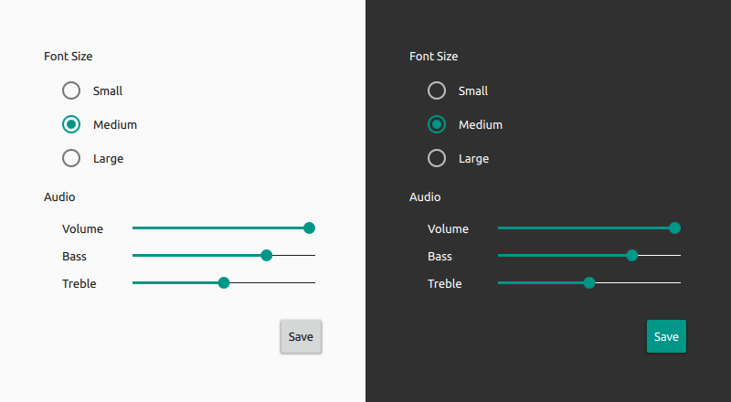
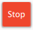
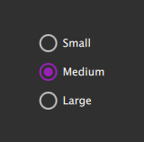

Material Style
The Material Style is based on the Google Material Design Guidelines. More...
| Import Statement: | import Qt.labs.controls.material 1.0 |
Attached Properties
Detailed Description
The Material style is based on the Google Material Design Guidelines. It allows for a unified experience across platforms and device sizes.

The Material style in light and dark themes
Note: The Material style is not a native Android style. The Material style is a 100% cross-platform Qt Labs Controls style implementation that follows the Google Material Design Guidelines. The style runs on any platform, and looks more or less identical everywhere. Minor differences may occur due to differences in available system fonts and font rendering engines.
Customization
The Material style allows customizing three attributes, theme, primary and accent. The following example illustrates how to create a red stop button with light text:
import QtQuick 2.0 import Qt.labs.controls 1.0 import Qt.labs.controls.material 1.0 Button { text: "Stop" highlighted: true Material.accent: Material.Red Material.theme: Material.Dark } |  |
Both attributes can be specified for any window or item, and they automatically propagate to children in the same manner as fonts. In the following example, the window and all three radio buttons appear in the dark theme using a purple accent color:
import QtQuick 2.0 import Qt.labs.controls 1.0 import Qt.labs.controls.material 1.0 ApplicationWindow { visible: true Material.theme: Material.Dark Material.accent: Material.Purple Column { anchors.centerIn: parent RadioButton { text: qsTr("Small") } RadioButton { text: qsTr("Medium"); checked: true } RadioButton { text: qsTr("Large") } } } |  |
Note: The Material style must be separately imported to gain access to these style-specific attributes. It should be noted that regardless of the references to the Material style, the same application code runs with any other style. The Material style-specific attributes only have an effect when the application is run with the Material style. Furthermore, in case of explicit Material style-specific references, the Material style must be deployed with the application.
Pre-defined Colors
Even though primary and accent can be any color, it is recommended to use one of the pre-defined colors that have been designed to work well with the rest of the Material style palette:
Available pre-defined colors:
| Constant | Description |
|---|---|
Material.Red | Red (#F44336) |
Material.Pink | Pink (#E91E63) |
Material.Purple | Purple (#9C27B0) |
Material.DeepPurple | Deep Purple (#673AB7) |
Material.Indigo | Indigo (#3F51B5) |
Material.Blue | Blue (#2196F3) |
Material.LightBlue | Light Blue (#03A9F4) |
Material.Cyan | Cyan (#00BCD4) |
Material.Teal | Teal (#009688) |
Material.Green | Green (#4CAF50) |
Material.LightGreen | Light Green (#8BC34A) |
Material.Lime | Lime (#CDDC39) |
Material.Yellow | Yellow (#FFEB3B) |
Material.Amber | Amber (#FFC107) |
Material.Orange | Orange (#FF9800) |
Material.DeepOrange | Deep Orange (#FF5722) |
Material.Brown | Brown (#795548) |
Material.Grey | Grey (#9E9E9E) |
Material.BlueGrey | Blue Grey (#607D8B) |
Note: Types in the Qt.labs module are not guaranteed to remain compatible in future versions.
Attached Property Documentation
Material.accent : color |
This attached property holds the accent color of the theme. The property can be attached to any window or item. The value is propagated to children.
The default value is Material.Teal.
Note: Even though the accent can be any color, it is recommended to use one of the pre-defined colors that have been designed to work well with the rest of the Material style palette.
Material.primary : color |
This attached property holds the primary color of the theme. The property can be attached to any window or item. The value is propagated to children.
The default value is Material.BlueGray.
Note: Even though the primary can be any color, it is recommended to use one of the pre-defined colors that have been designed to work well with the rest of the Material style palette.
Material.theme : enumeration |
This attached property holds whether the theme is light or dark. The property can be attached to any window or item. The value is propagated to children.
Available themes:
| Constant | Description |
|---|---|
Material.Light | Light theme (default) |
Material.Dark | Dark theme |